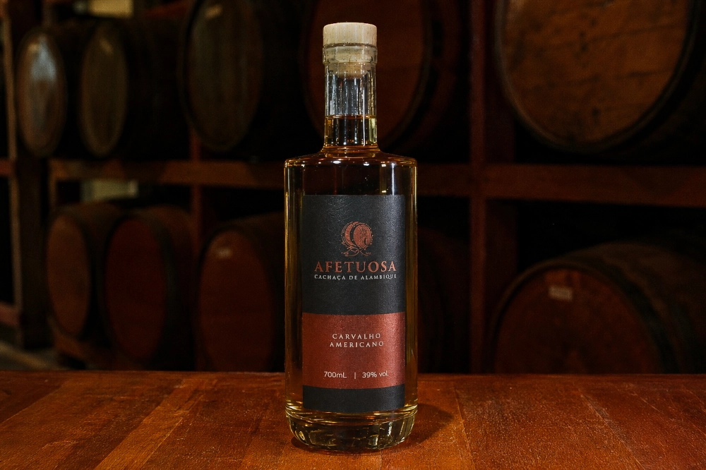
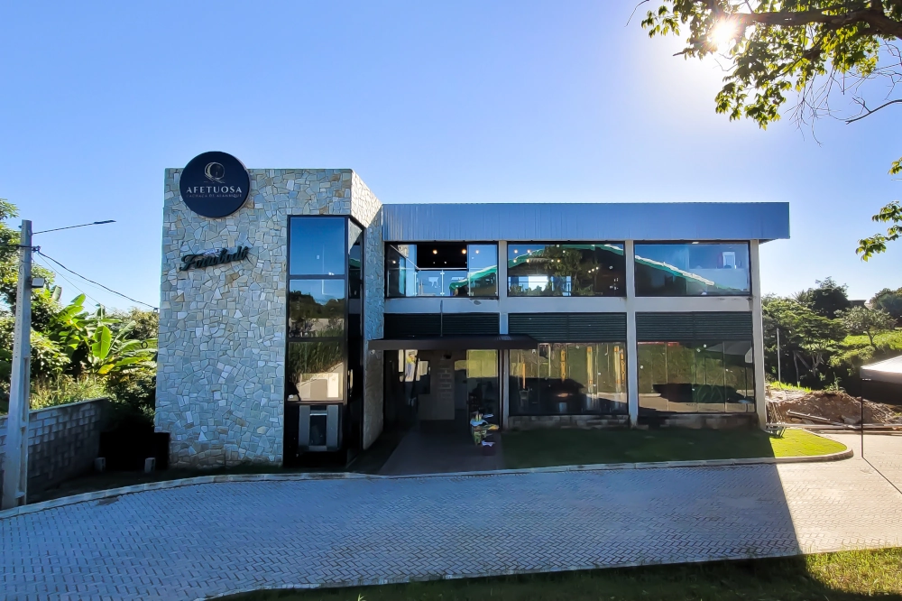
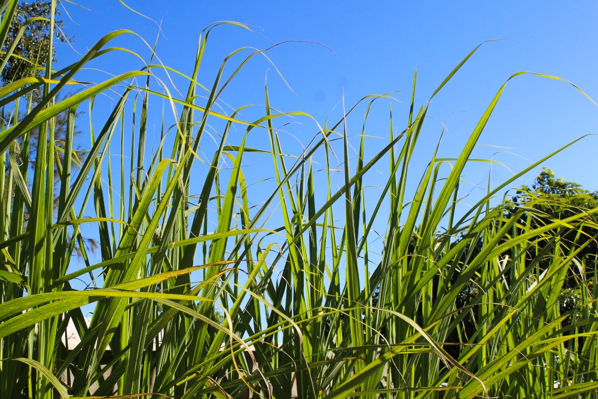
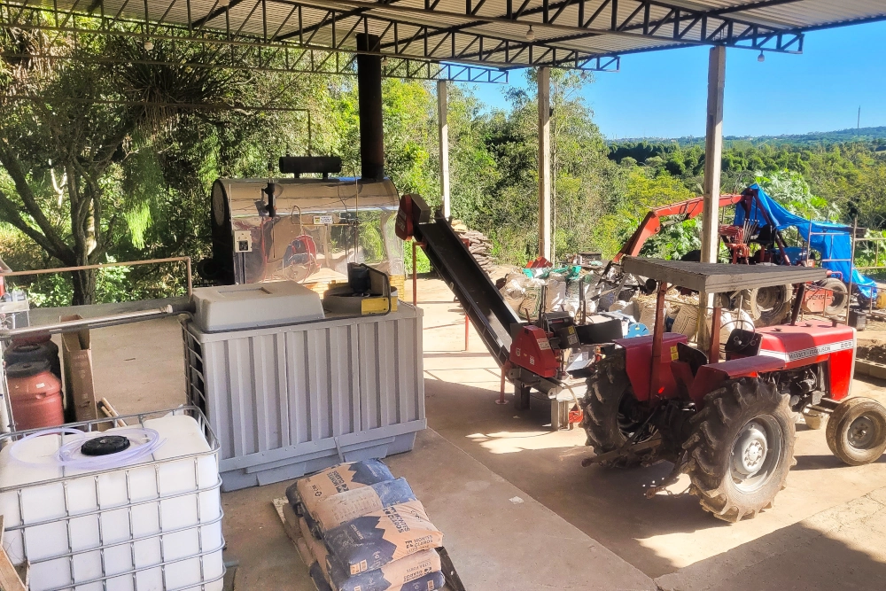
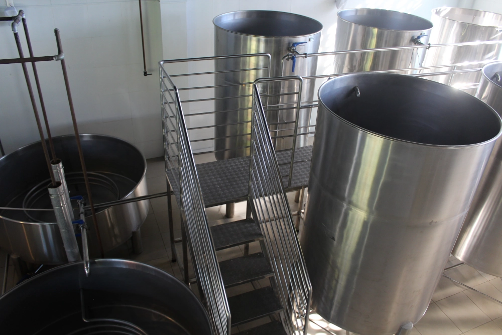
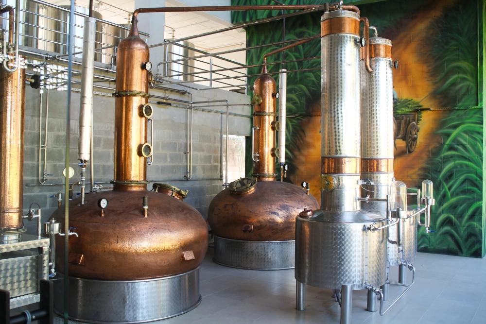
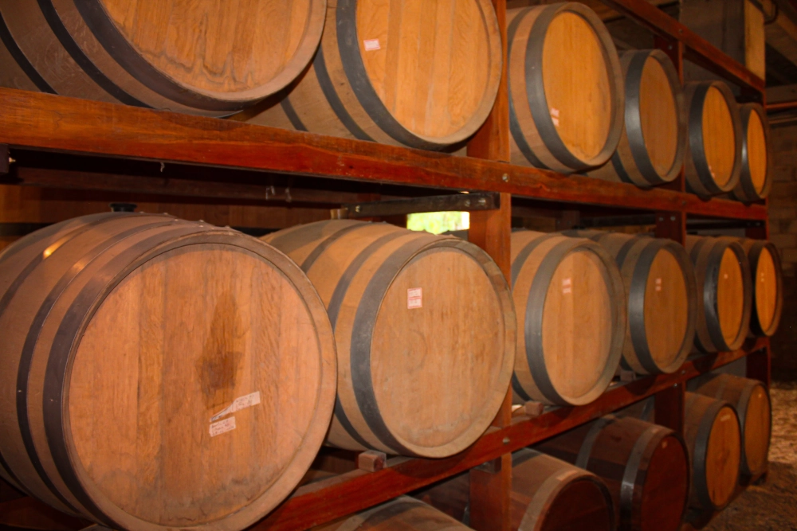
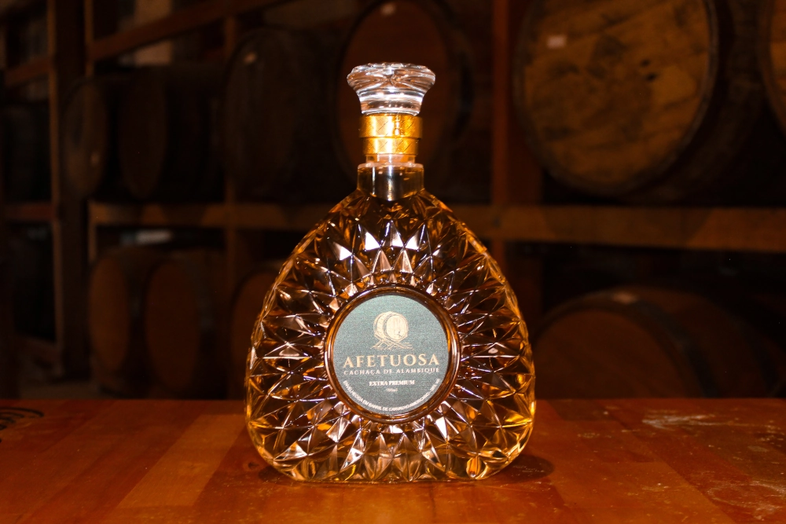

CACHAÇA AFETUOSA
Onde tradição e inovação se encontram
Produzida em Lagoa Seca, na Paraíba, a Cachaça Afetuosa nasce da união entre tradição, excelência e inovação.

SOBRE NÓS
Onde tradição e inovação se encontram
A Paraíba ocupa um lugar de destaque na tradição da cachaça brasileira. Com clima favorável e engenhos históricos, o estado consolidou-se como uma das principais referências na produção de cachaças de alta qualidade.
É nesse cenário que nasce a Cachaça Afetuosa. Produzida em Lagoa Seca, unindo técnicas tradicionais, controle de qualidade e inovação para criar uma bebida que respeita sua origem enquanto olha para o futuro.

A DESTILARIA
O Caminho da Excelência
Cada etapa da produção da Afetuosa carrega o cuidado, a tradição e o tempo que transformam a cachaça em uma experiência única. Conheça o caminho percorrido até chegar à sua taça.
Seleção da Cana
Selecionamos canas no ponto ideal de maturação para preservar o máximo de aroma e sabor.

Moagem
A cana é moída rapidamente para preservar seu frescor, e o caldo passa por uma filtragem.

Fermentação
A fermentação acontece de forma natural, com leveduras selecionadas e controle preciso de temperatura.

Destilação
Em alambiques de cobre, apenas o coração da destilação é preservado. Esse cuidado elimina impurezas e revela uma cachaça mais pura e suave.

Envelhecimento
O tempo completa a obra. Em barris de madeira selecionados, a Afetuosa valoriza cada etapa da produção.

PRODUTOS
A Arte do Destilado
Carvalho Americano
Produzida em alambique, reúne equilíbrio, aromas marcantes e um sabor que preserva a essência da tradição brasileira.
Extra Premium
Elaborada para quem aprecia experiências mais sofisticadas, combina complexidade, elegância e um acabamento refinado.

Edições Especiais
Desenvolvidas para celebrar momentos únicos, recebem rótulos personalizados sem abrir mão da identidade e da qualidade da Afetuosa.
VISITAÇÃO
Visite o Engenho Afetuosa
Abriremos nossas portas para que você conheça cada detalhe da nossa história. Do campo à mesa, uma jornada sensorial com degustações exclusivas.
RESERVAR EXPERIÊNCIAOnde a História Vive
O Engenho Afetuosa está situado a poucos minutos de Campina Grande, passando pelo Atacadão do Jardim Tavares em direção à cidade de Lagoa Seca.
BR-104, KM 117 • Lagoa Seca, PB
Sábado e domingo, das 13h às 17h
AINDA TEM DÚVIDAS?
Dúvidas Frequentes
Informações sobre visitação, experiências, localização e disponibilidade da Cachaça Afetuosa.
O Engenho Afetuosa está localizado na BR-104, KM 117, em Lagoa Seca - PB, a poucos minutos de Campina Grande.
Sim! Recebemos visitantes sábado e domingo, das 13h às 17h, para conhecer de perto o processo de produção e a história da Afetuosa.
Recomendamos agendar com antecedência para garantir uma experiência mais cuidadosa e personalizada para você e seu grupo.
Você vai conhecer as etapas da produção e todos os nossos produtos.
Nossos produtos estão disponíveis no próprio Engenho e em pontos de venda selecionados. Entre em contato para saber o revendedor mais próximo.
Sim, organizamos experiências especiais para grupos, empresas e eventos privados. Fale com a nossa equipe para montar um roteiro sob medida.